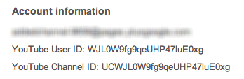

1. Visit the Youtube Channel page of the Youtube channel you would like to show the uploaded videos from and open the page with "Videos".

2. Select one of the uploaded videos, for example, the first one.
3. Click the playlist title in the "Playlist Bar" that appears to the right of the video.
4. Now check the url in the adress bar, and you will see the playlist ID
You can manually retrieve the CHANNEL ID of your own YouTube account by accessing this link:
YouTube Channel ID and User ID info
By clicking on the above link, a screen with your account’s Advanced Information will show up, something similar to this:
If you would like to know the CHANNEL ID of someone else his youtube account, you will need to visit the Youtube Channel Page again.
1. Right click the page and select the option to browse the page sourcecode.
2. Try to find the channelid parameter by doing a page search with (CNTRL + F OR CMD + F). You will see the ChannelId in the content attribute between the brackets.